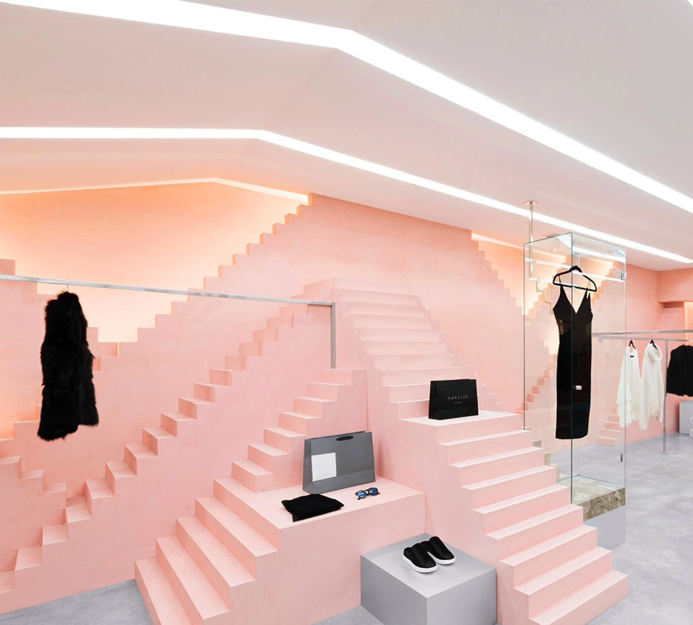
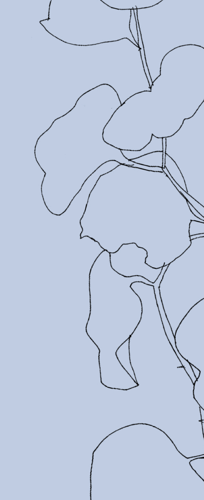

“To be whole. To be complete. Wildness reminds us what it means to be human, what we are connected to rather than what we are separate from.”
Philosophy
Inspired by the greatest design system of all time — nature — we create products and experiences to get you back into working order.
Elixirs
Founded in Brooklyn, we currently offer a selection of made-to-order restorative elixirs, each influenced by the three needs our bodies have throughout the day: Awaken, Rejuvenate, Unwind.
Visit
To experience WORKING ORDER for yourself, we invite you to visit us at our mimuted summer pop-up space, running from September through November.

"Get ready for summer with this new all-natural restorative elixirs."From the New York Times
